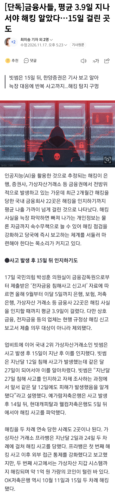
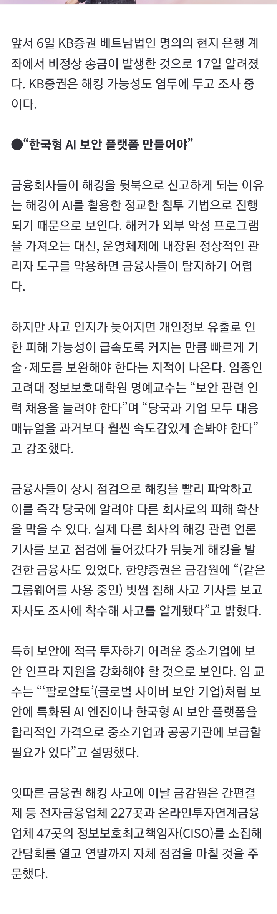

https://n.news.naver.com/article/020/0003763139?sid=101 [단독]금융사들, 평균 3.9일 지나서야 해킹 알았다…15일 걸린 곳도인공지능(AI)을 활용한 것으로 추정되는 해킹이 은행, 증권사, 가상자산거래소 등 금융권에서 전방위적으로 발생하고 있는 가운데 최근 2개월간 해킹을 당한 국내 금융회사 22곳은 해킹을 인지하기까지 평균 나흘 가까이n.news.naver.com출처: 국민의힘 비대위 갤러리 [원본 보기]

댓글
수집 당시 댓글 10개
楚覇王 項羽 · 11.17 20:20:23
ㅇㅇ · 11.17 20:20:57
ㅇㅇ · 11.17 20:21:55
ㅇㅇ · 11.17 20:22:05
ㅇㅇ · 11.17 20:22:08
ㅇㅇ · 11.17 20:22:19
· ㅇㅇ · 11.17 20:22:23
ㅇㅇ · 11.17 20:25:33
ㅇㅇ · 11.17 20:25:37
DC전사쿠루미쨩 · 11.17 20:25:51